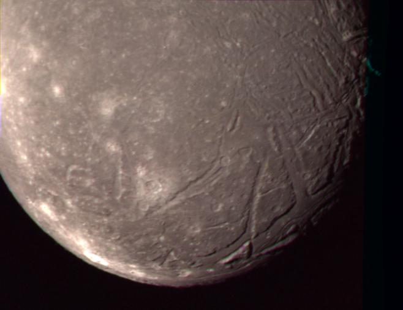
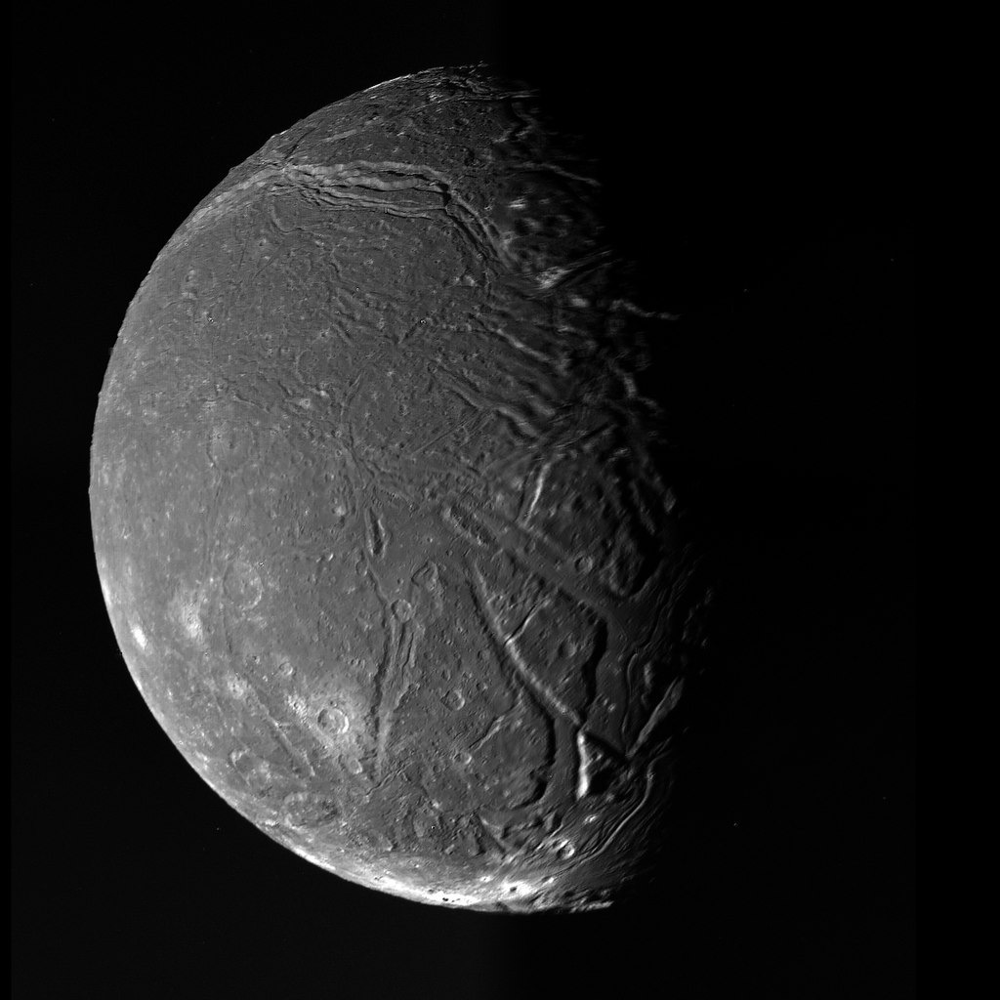

спутника Урана, сделанный «Вояджером-2». Отдельные фотографии, использованные
для создания этой композиции, были сделаны 24 января 1986 года с расстояния
170 000 километров. Авторские права изображения принадлежат NASA/JPL.
Ариэль – естественный спутник Урана, также называемый Уран I. Он был открыт 24 октября 1851 года Уильямом Ласселлом, английским астрономом-любителем и купцом, который также сделал открытия некоторых других спутников: Тритона, Гипериона и Умбриэль.
Все известные на сегодня данные об Ариэль были получены в ходе пролёта космического аппарата «Вояджер-2» в 1986 году (заснять удалось всего лишь ~ 35% спутника). Больше ни один космический аппарат с ним не сближался.
Ариэль совершает полный оборот вокруг Урана приблизительно за 2,5 дня. Расстояние от планеты до него около 190 000 км. Является спутником правильной (шарообразной) формы и четвертым по величине.

изображение спутника Урана, сделанное «Вояджером-2». Изображения были отсняты
через прозрачный фильтр узкоугольной камеры «Вояджера» 24 января 1986 года на
расстоянии около 130 000 километров. Авторские права изображения принадлежат NASA/JPL.
Принято считать, что Ариэль состоит из водяного и силикатных пород с соотношением примерно 1:1. С помощью инфракрасной спектроскопии на поверхности Ариэля были идентифицированы еще два вещества: углекислый газ и аммиак. На поверхности луны довольно холодно: -213°C (60°K).
Ариэль, как и все спутники Урана, образовался из аккреционного диска (субнебулы), который оставался вокруг Урана после его образования. Точный состав аккреционного диска неизвестен. Наводку на то, из чего он мог бы состоять намекает нам плотность спутников холодной планеты. В отличии, например, от спутников того же Сатурна они в разы плотнее. Это может указывать на относительную бедность водой.
Все спутники планеты Уран названы в честь персонажей творчества Уильяма Шекспира или поэмы «Похищение локона», написанной Александром Поупом. Ариэль названа в честь главной сильфиды в «Похищении локона». Это также имя духа, который служит Просперо в «Буре» Шекспира.

ВНИМАЕНИЕ! На работе не соблюдены масштабы и расположения небесных тел.